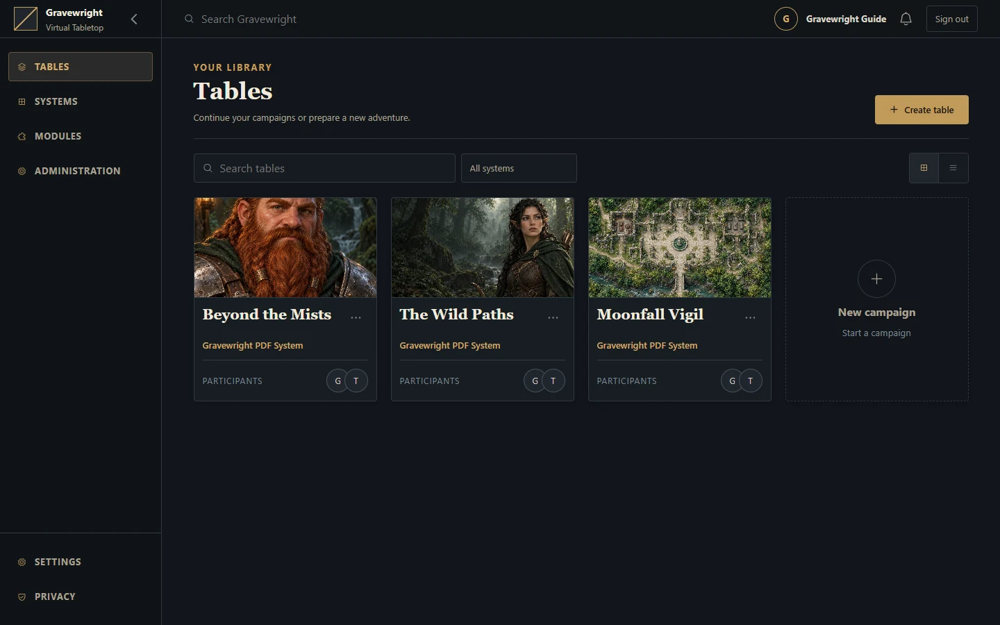

Getting started
Installation, prerequisites, first launch and source checkout setup.


For local play, use the installer for Windows, Linux or macOS. It reuses compatible tools, prepares missing tools and locked Python/npm dependencies, builds the frontend and saves configuration. The generated Gravewright Runner starts the prepared application separately. The manual terminal workflow below is for a source checkout with manually managed configuration.
| Platform | Install | Start after installation |
|---|---|---|
| Windows x64 | Open Install Windows.bat | Open Gravewright Runner.bat |
| Linux x64 / ARM64 | bash "./Install Linux.sh" | bash "./Gravewright Runner.sh" |
| macOS 13.5+ Intel / Apple Silicon | Open Install macOS.command or run bash "./Install macOS.command" | Open Gravewright Runner.command |
Extract the whole project into a writable folder first. Installation can download tools and packages; startup uses the prepared environment. Keep the Runner terminal open and press Ctrl+C to stop. The default address is http://127.0.0.1:3000. Linux private downloads require glibc; see its guide for recognized distribution families and Alpine/musl limits.
The 0.2.1 archive refreshed on 13 October 2026 includes these Linux/macOS installers alongside Windows. Already-installed 0.2.1 hosts need the refreshed ZIP and matching checksum manually; the automatic updater does not offer the same version again. Stop the Runner, back up .env, configured database/media and Runner recovery state, preserve them while replacing application files in the existing folder, then rerun its installer. See the complete refresh instructions.
Prerequisites
Use Python 3.14 or newer as required by pyproject.toml. The project uses Python 3.14 syntax; selecting an older interpreter is not supported. Install uv using its official installation instructions. Run the following commands from the directory containing manage.py.
uv sync --locked
cp -n .env.example .env
uv run --locked python manage.py migrate
uv run --locked python main.pyuv sync includes the development dependency group. The lock file supplies the reproducible package versions. This terminal workflow serves the existing JavaScript and CSS assets. To rebuild them, use the npm project under gravewright/maps/frontend as described in frontend; the platform installers perform that preparation automatically. In Windows CMD, replace the copy command with if not exist .env copy .env.example .env.
First access
Open http://127.0.0.1:3000. Before an owner exists, /setup creates the VTT owner and signs in. Choose a name, email and a password of at least 12 characters. /register creates participant accounts after setup; /login signs in existing users.
The owner can create campaigns through /inside, invite players and enter the table. Campaign membership determines GM/player permissions. See the user guide.
If you need Django's separate /admin/ interface:
uv run --locked python manage.py createsuperuserThis creates an administrative account, not a VTT owner. Do not use it as a replacement for /setup.
Files and settings
.env is optional and loads automatically. Exported process variables take precedence; ${NAME} in .env remains literal. Restart the server after changing settings. See the complete configuration reference.
The generated Runner uses the project .env and its database/media paths, while enforcing its local network profile. All default storage stays in the extracted project folder on Windows, Linux and macOS: data/ for runtime state, logs and collected assets, and data/runner/ for managed tools, environments and caches. It does not share state through the operating-system user profile. Runner --data-dir changes state/logs/collected assets; change .env to relocate the database or uploads. Back up the configured database, media and .env together before upgrades.
| Path | Purpose |
|---|---|
.env | Local configuration and private secrets |
data/gravewright.sqlite3 | Default application database |
data/media/ | Default private uploads and installed module packages |
data/vtt/compendiums/ | Optional native content collections read from disk |
staticfiles/ | Output of collectstatic; regenerated for deployment |
data/test-gravewright.sqlite3 | Django test database |
test-results/ | Browser test logs, reports and screenshots |
If you override database/media paths, create their parent directories and ensure the service account can write to them. Normal local development uses a single ASGI process and an in-memory Channels layer. Public hosting and multiple workers require additional setup; see deployment.
Common problems
| Symptom | Check |
|---|---|
Missing table / no such table | Run migrations against the intended GRAVEWRIGHT_DATABASE |
| Existing campaigns appear missing | Confirm the database path; root db.sqlite3 is not the configured default |
| Startup rejects a setting | Read the named variable; booleans and limits are validated |
| Startup requests a secret or Redis | Standard server settings with DJANGO_DEBUG=false require a persistent secret and Redis URL; generated Runners have a separate local profile |
| Installer or Runner reports missing prepared tools | Rerun the platform installer from the complete project folder; the generated Runner does not install tools |
| Linux/macOS script will not open | Run its quoted filename with bash in a terminal; see the platform guide for executable permissions and macOS download restrictions |
| Login works but cookies disappear on local HTTP | Clear GRAVEWRIGHT_PUBLIC_ORIGIN and disable DJANGO_SECURE_COOKIES for local HTTP; start a fresh browser session |
| Invalid host or WebSocket rejection | Match the browser URL to GRAVEWRIGHT_PUBLIC_ORIGIN, including its port; check allowed hosts and trusted proxy headers in deployment |
| Port 3000 is occupied | Set GRAVEWRIGHT_PORT or run manage.py runserver 127.0.0.1:3001 |
| Changes are not visible across processes | Configure all processes with the same Redis channel layer |
| Blank board or render failures | Check browser console, WebGL availability and asset/network errors |
For contributor checks and browser setup, continue to testing.